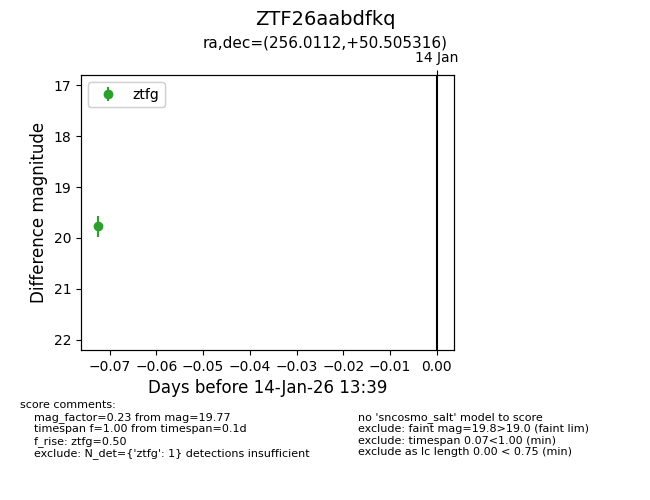
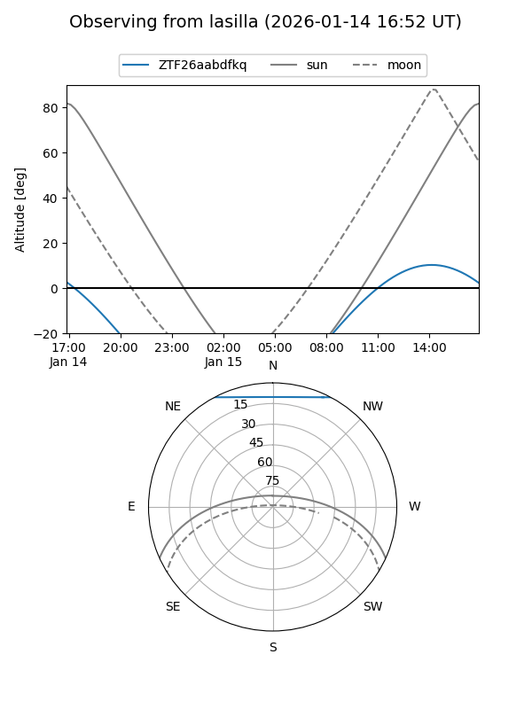
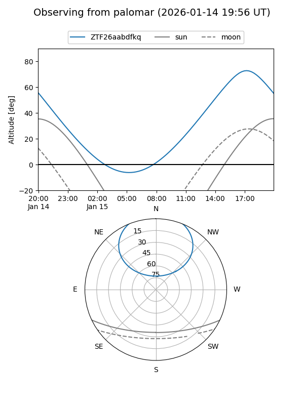

ZTF26aabdfkq
Target ZTF26aabdfkq at 2026-01-14 13:40
Aliases and brokers:
FINK: link
Lasair: link
ALeRCE: link
alt names
ZTF26aabdfkq (ztf,fink_ztf)
Coordinates:
equatorial (ra, dec) = 256.0112,+50.50532
equatorial (HMS+DMS) = 17:04:02.70,+50:30:19.14
galactic (l, b) = (77.3384,+37.41000)
Flags:
Photometry:
last ztfg=19.77
1 ztfg detections
Lightcurve

Visibility


Additional plots